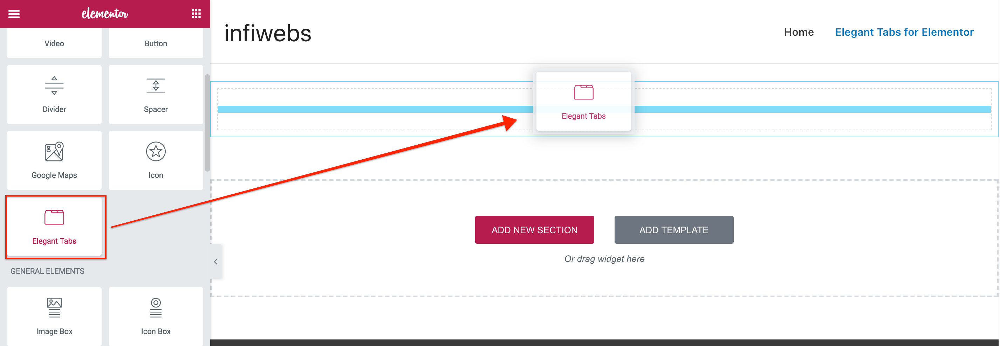
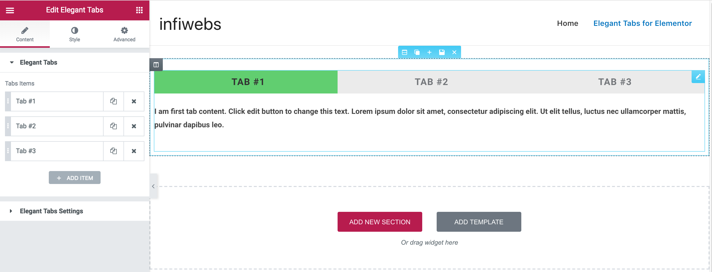
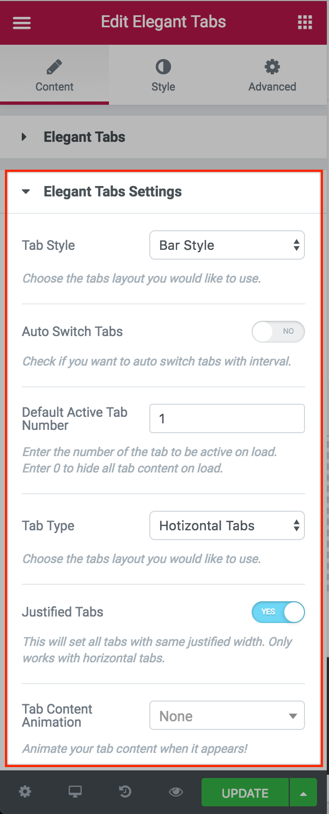
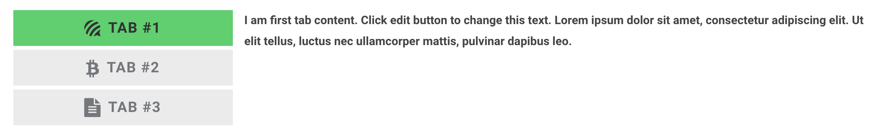
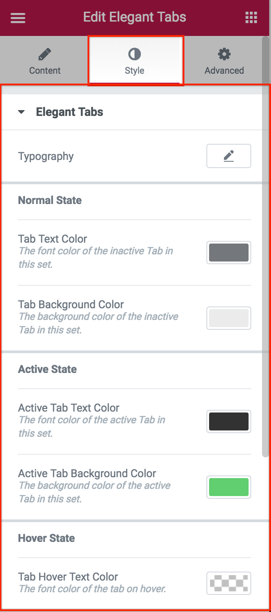
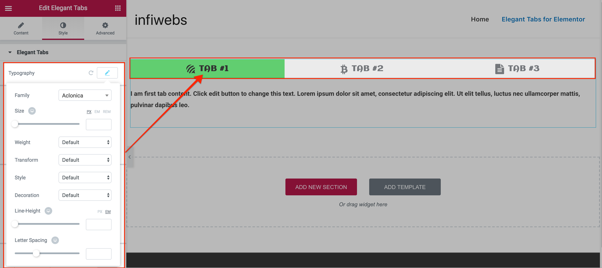

Elegant Tabs for Elementor
Elegant Tabs add-on for Elementor Page Builder
In order to get this product working flawlessly, please ensure that all the minimum requirements as specified below will be satisfied.
Wordpress - Version 4.5 & above.
PHP - 5.6 or above
Elementor Page Builder version 1.9 and above
Once you have your setup ready with this basic requirements, you just need to follow these steps.
Please feel free to get in touch with our support team if you need any help.
There are two different ways for installing your plugin.
-
Install plugin through WordPress plugin installer, which is provided by WordPress core.
-
Install the plugin via FTP. In case, you have enabled FTP on your WordPress install, you can still install the plugin via FTP.
Installing Through Dashboard:
-
Go to Plugins -> Add New -> Upload
-
Choose the installable ZIP file (that you have download in your computer from codecanyon) Upload that file.
-
Now, click on activate link to activate the plugin.
Installing Through FTP:
-
Extract the installable ZIP file (that you have download in your computer from codecanyon) Upload the extracted folder into wp-content/plugins directory.
-
Activate the plugin through the 'Plugins' menu in WordPress.
After the successfull installation of the Elegant Tabs for Elementor, you can edit your existing page for adding the tabs or just follow these instructions to create a new page and add Elegant Tabs.
-
Go to Pages -> Add New. This will head you to the create new page window.
-
Fillup the basic information like page title etc. Now, click on the Large "Edit with Elementor" button just above the WordPress editor. You will be redirected to the frontend editor of Elementor to design your page.
-
Click on the "Add Section", then click on any column layout you want to use the tabs in. I added full-width column for eg. Which will look like this -

-
Once you drag the Elegant Tabs widget to the editor area, you'll be presented with 3 default tabs that will help you get started. You'll find the tab settings by clicking on the tabs in the editor, and it will open its settings on the settings panel, like this -

-
Now try editing any of the tabs in the Elegant Tabs section in settings panel. You'll see a lot of options there. They are self explainatory, still here's what each of them will do -
-
Tab Title - This is the text displayed on the tab navigation. You can keep it empty if you want to display only Icons as navigation.
-
Tab ID - This is for your internal use. If you want to link the tab from any other pages, you can use the tab id given here with prepending the "section-". So, eg. if you have given the tab id as tab-first, then you need to use it as "#section-tab-first" to set the link for this tab.
-
Icon Type - We have provided two options for icons. a) Font Icon and b) Image Icon. If you want to use your custom image icons, you can simply select the icon type as Image Icon, and upload your images.
-
Icon - Select the fontawesome icon from the list of icons available to use as tab icon.
-
Custom Image Icon - Upload your custom image icon to use as tab icon.
-
Custom Image Icon on Hover & Active - Upload your cusomt image icon you want to use on hover and active tab state. You can use different icons for inactive and hover & active tab state.
-
Image Icon Width - You can control the image icon width as per your need. Default is set to 32px.
-
Image Icon Height - You can control the image icon height as per your need. Default is set to 32px.
-
Tab Content Editor - Editor where you can add your tab content with images, shortcodes etc. This is same as WordPress editor, so you can swtich between code and visual modes to adjust the html and its output in the editor itself.
-
Content Columns - Right now, the Elementor doesn't have an API for adding custom elements in the tab content or columns to divide the tab content. Which is why we have provided an option that will help you achive this. Set the number of columns you want to divide the text in. This will act same as other columns, and will divide your content into the number of columns set.
-
Column Spacing - You might need to adjust the spacing in between the columns according to the content. Here's the option to adjust it. You can control the spacing between columns as per your need.
-
Border Type - To give your tab content columns a nice design touch, you can add the border divider within the columns. The border will add vertical divider between columns. You can select the style type from the available options - Solid, Double, Dotted and Dashed. If you don't want to use the border divider, simply select the none option.
-
Border Width - Control the thickness of the border divider between columns. This option is dependent on the border type option. If the border type is set to none, this option will be hidden.
-
Border Color - Give the border divider between columns a nice color to make it look even better. This option is dependent on the border type option. If the border type is set to none, this option will be hidden.
Elegant Tab Settings
Second step is to change tab settings, so you can check the various tab styles and options. Just click on the "Elegant Tabs Settings" section in settings panel, which is located just below the tabs section. Again, all of these options are also self explainatory, we have covered them below -

-
Tab Style - This is where you'll set the tab style from different available styles. Each style has unique tab design. Check our demos or try changing the style here to see the preview and set what you love.
-
Auto Switch Tab - Do you want to auto switch the tabs like slider? Turn this option ON. Then your tabs will switch between them like the slider.
-
Auto Switch Interval - If you turned ON the above option for auto switch, you can control the interval from this option. The value set is in seconds.
-
Default Active Tab Number - This is wher you can set any tab active on page load depend on their index number. If you want to set all tabs inactive on page load, then just set the tab number to 0 ( Zero ), then all the tabs will become inactive until you click on any tab to see its content.
-
Tab Type - Control the tab navigation alignment. You'll have two options - Horizontal and Vartical. Vartical tabs will set the tab navigation to the left side, like this -

-
Justified Tabs - If you want to spread the tabs to full width of the container, just turn on this option. This will set the tab navigation to full width and divide the width into available tabs. This option is dependent on the Tab Type Horizontal.
-
Tab Content Animation - Control the animation for tab content when you switch the tabs.
-
Tabs on Mobile Devices - This option let you control how you want the tabs to be displayed on mobile devices. Due to the design complexity, the tabs doesn't look good on mobile devices, which is why we have provided two options - Dropdown and Accordion. You can set the option as per your requirements.
Tab Design Options
Now, that you've all set with the tab settings and content, lets give them some nice look with colors and typography. To change the tab colors for normal state, hover state and active state, please change the to the "Design" tab in settings panel. Below is the description of each option -

-
Typography - The typography settings allow you to change the fonts properties for the tab navigation text. You can choose the fonts from available list with System Fonts and Google Fonts. Also, you can adjust the tab text line height, its font weight, letter spacing and many more. See screenshot below for more info -

-
Tab Text Color - Controls the tab navigation text color for normal inactive tab.
-
Tab Background Color - Controls the tab navigation background color for inactive tab.
-
Active Tab Text Color - Controls the tab navigation text color for active tab.
-
Active Tab Background Color - Controls the tab navigation background color for active tab.
-
Tab Hover Text Color - Controls the tab navigation text color when you hover over the tab.
-
Tab Hover Background Color - Controls the tab navigation background color when you hover over the tab.
-
Tab Content Background Color - Controls the background color of tab content area.
-
Tab Content Text Color - Controls the text color for the tab content. Though you can change the content color from the content editor itself, this setting controls the default text color.
-
Typography - This typography setting allows you to change the font properties for the tab content. As like the typography settings for tab navigation, you can control same settings for tab content too.